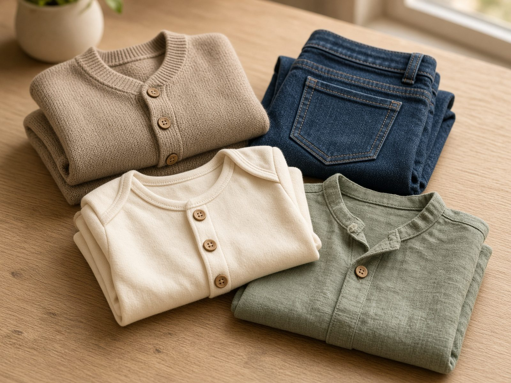
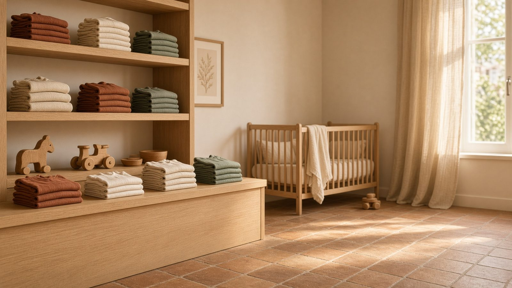
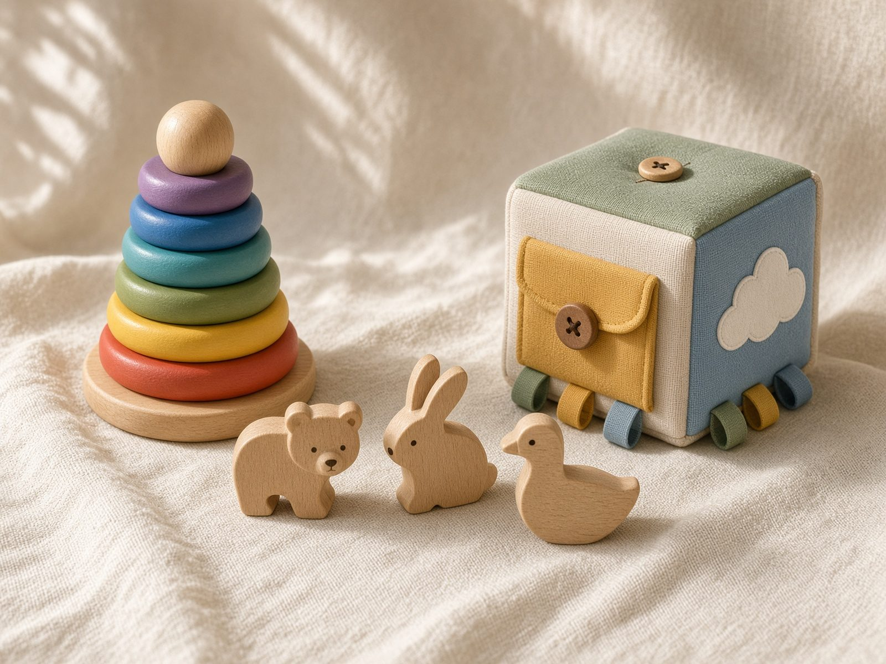
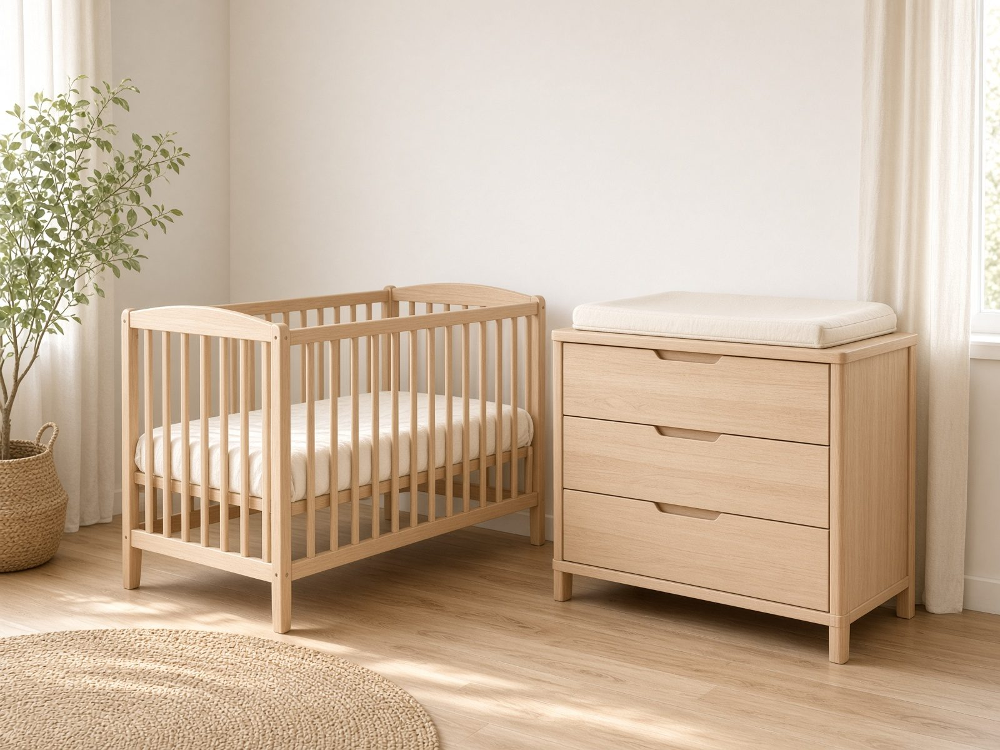
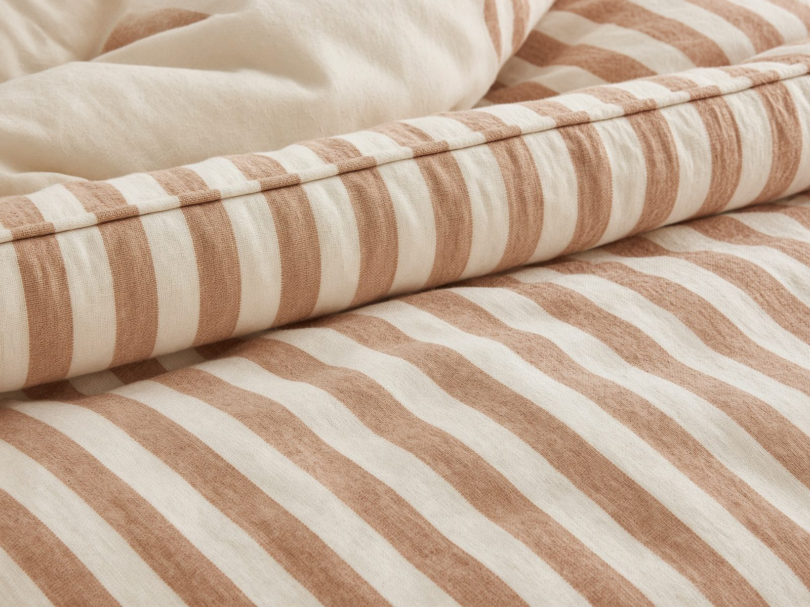
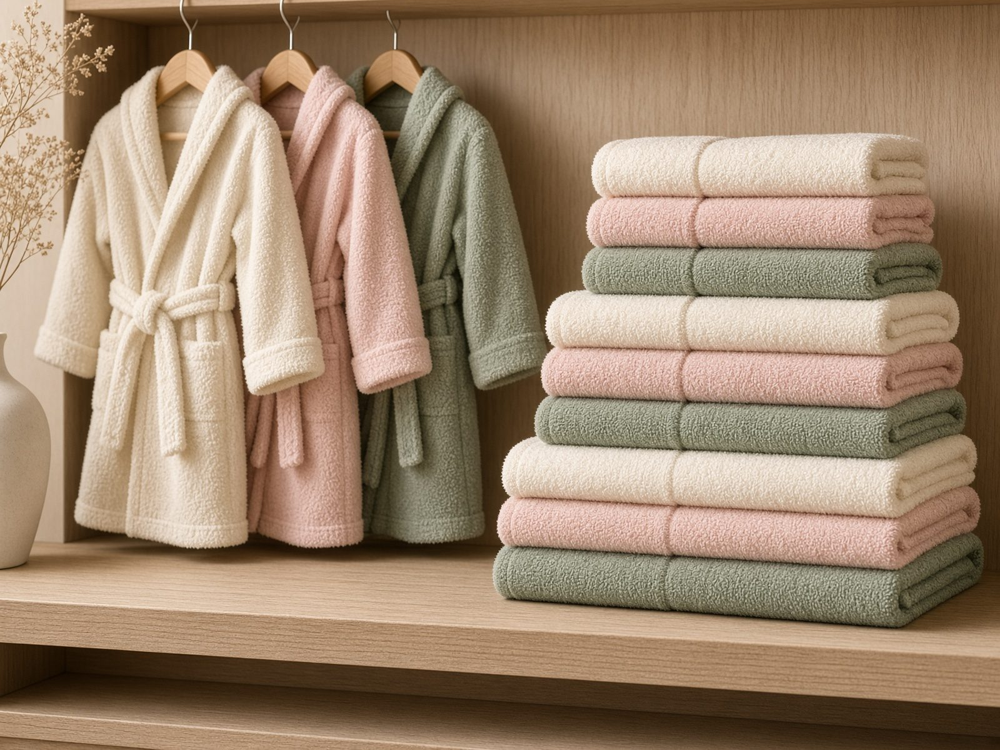
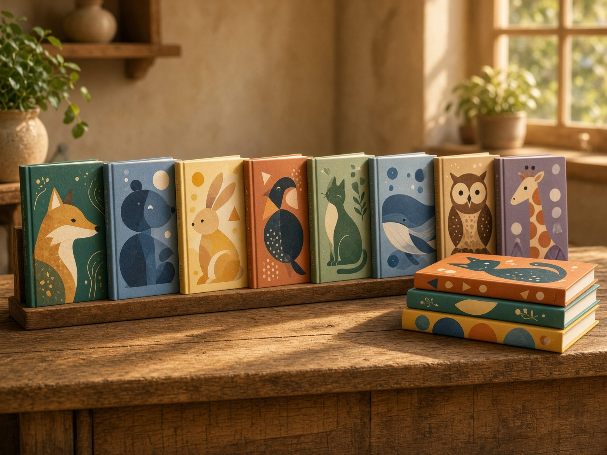

Oblačila0–12 let
Oblačila
Kosi iz koži prijaznih materialov, po trenutnih barvah in krojih. Od prvih oblačil do šolske garderobe.
Otroška trgovina · od leta 1990
Na enosmerni Kidričevi ulici v Zagorju ob Savi najdete oblačila, didaktične igrače, bukovo pohištvo, posteljnino in knjige. Kakovost, ki ostane — in svetovanje, ki ni naglica.

Ponudba
Izdelki so izbrani preudarno: kakovostni, lepo oblikovani in cenovno dosegljivi. Za natančno zalogo pokličite ali pišite.

Kosi iz koži prijaznih materialov, po trenutnih barvah in krojih. Od prvih oblačil do šolske garderobe.

Spodbujajo gibanje, motoriko in razumevanje. Brez škodljivih primesi, iz otroku prijaznih materialov.

Otroške sobe, previjalne mize, zibke in postelje iz bukovega lesa, brez škodljivih premazov.

Vrhunska posteljnina Odeja Škofja Loka, tudi iz organskega bombaža. Mehka in zračna.

Mehki kopalni plaščki in brisačke Svilanit. Toplo, nežno in pripravljeno za prvo kopel.

Kartonke, slikanice in zgodbe, tudi založbe Grahovac. Pošljemo tudi po pošti.
O trgovini
Trgovina Naj, Bojana Vodovnik s.p., je specializirana otroška trgovina. Izdelki naj bodo kakovostni, edinstveni in v otrokovo korist — tako da se dobro počutita starš in otrok.
Na enem mestu združujemo Chicco, Kanz in Losan ter slovenske znamke: pohištvo Lip Poljčane, posteljnino Odeja in tekstil Svilanit. Knjige, tudi akcijske že od 0,99 €, odpošljemo po pošti.
Chicco, Kanz, Losan, OshKosh, Carter's, Lip Poljčane, Svilanit, Odeja Škofja Loka in založba Grahovac.
Chicco
ItalijaKanz
NemčijaLosan
ŠpanijaOshKosh
ZDACarter's
ZDALip Poljčane
SlovenijaSvilanit
SlovenijaOdeja
Škofja LokaGrahovac
knjigeZa knjige, oblačila in manjše kose pišite na Facebook, pokličite ali pošljite e-pošto. Svetujemo glede velikosti in zaloge.
Obisk
Urnik po javno objavljenem delovnem času. Ob praznikih se lahko spremeni.
Kontakt
Obrazec odpre vaš e-poštni program in pripravi sporočilo na trgovina.naj@t-2.net. Ni spletne trgovine s košarico — odgovorimo osebno.
Če se e-pošta ni odprla, pokličite 03 566 12 14 ali pišite na trgovina.naj@t-2.net.